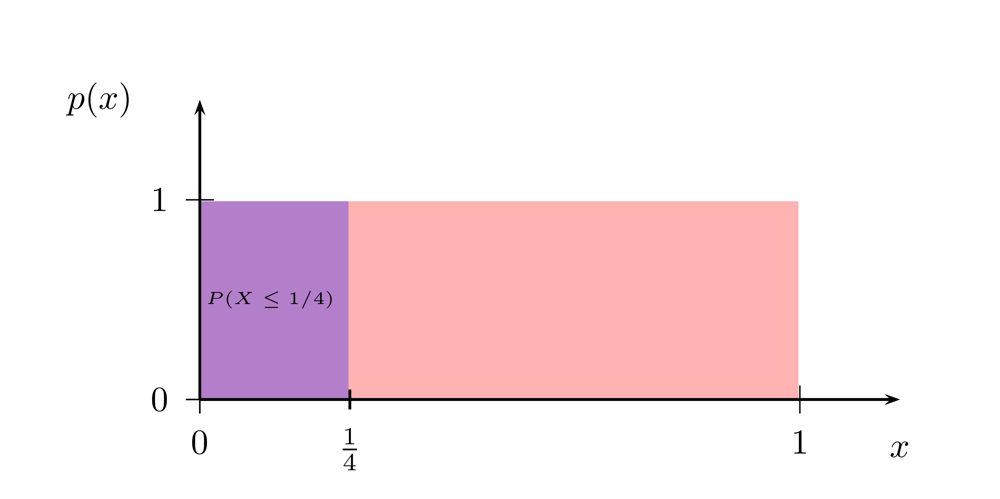
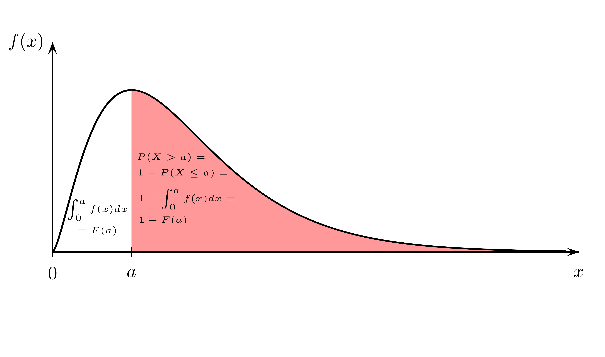
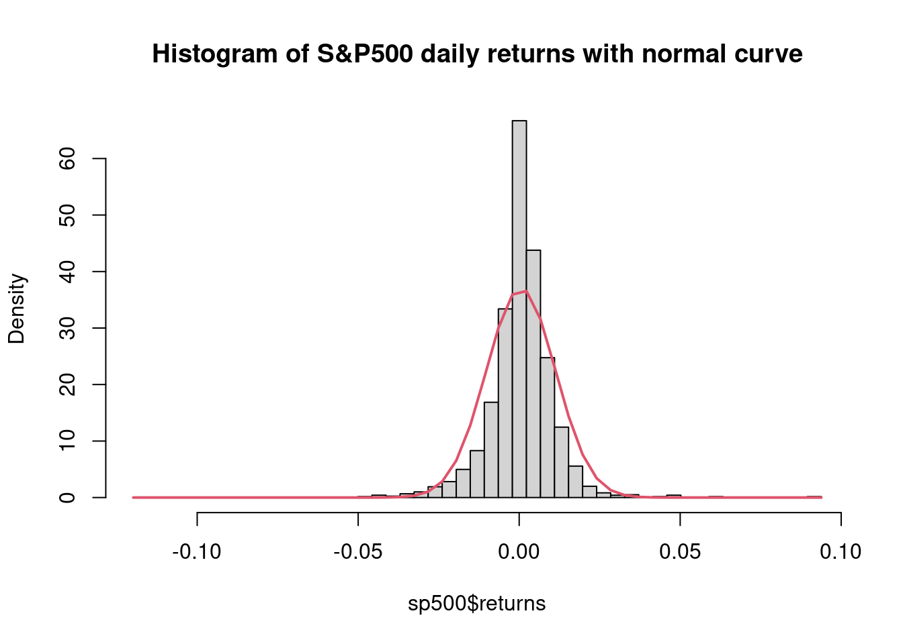
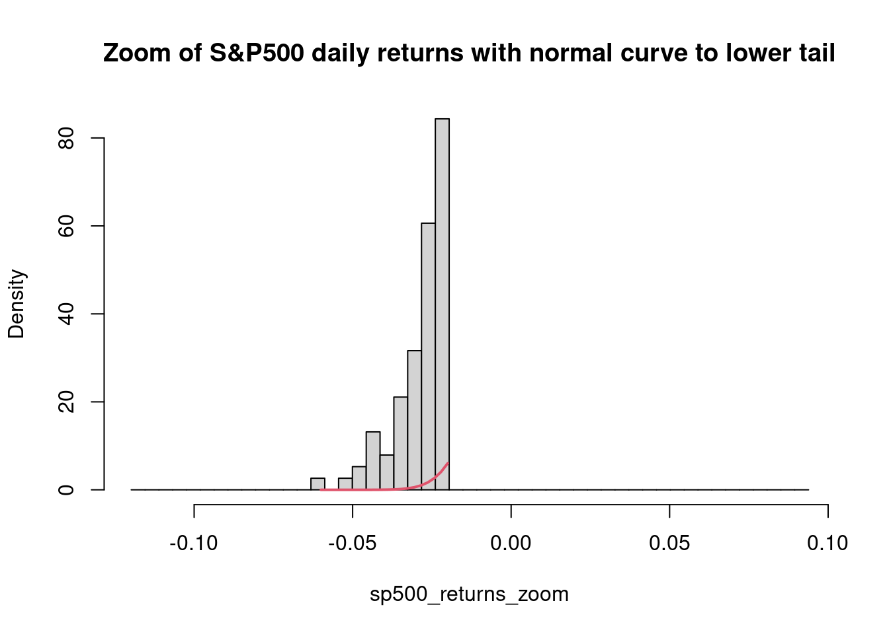
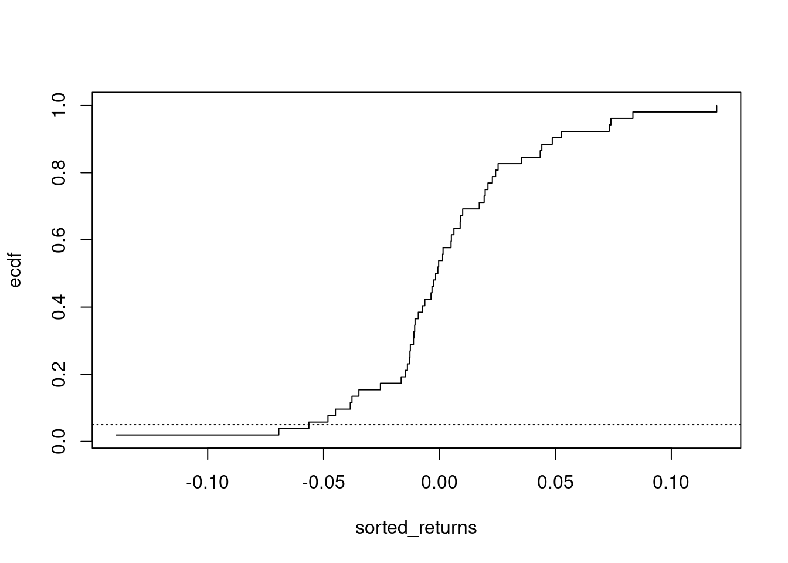
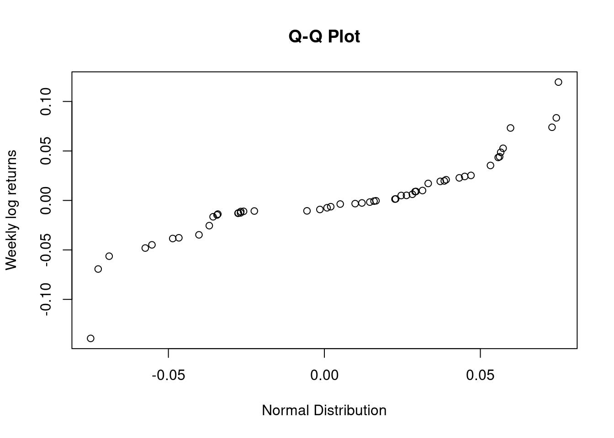
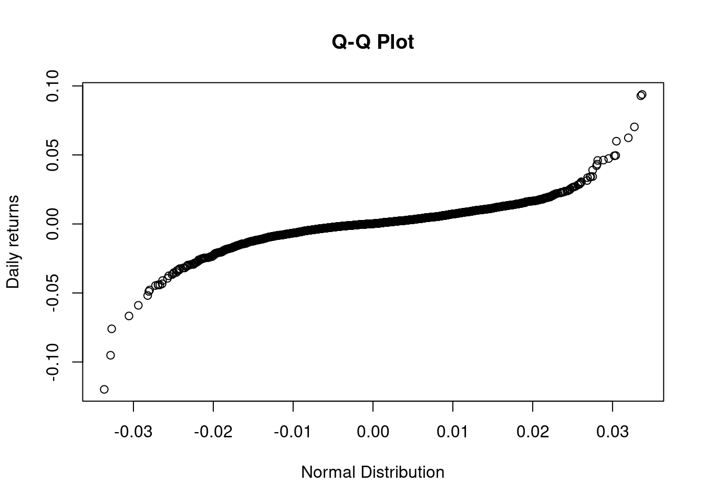

Chapter 5 Continuous random variables
In this lecture we will introduce the most important probability distribution, the normal distribution. While we have discussed discrete random variables so far, where the number of possible outcomes for \(X\) is finite (or countably infinite), to discuss the normal distribution we need to deal with the case that the number of outcomes for \(X\) is uncountable infinite, or a continuum. This leads us to the concept of a continuous random variable.
5.1 Continuous random variables and probability
We will discuss here the most important concepts needed for the practical work with continuous random variables. We just note that for a mathematically rigorous treatment of this case we would need advanced techniques such as measure theory. We will not do that here (reference to literature) because we want to focus on the more applied or practical aspects of continuous random variables.
- Continuous random variable
- A continuous random variable \(X\) can take on a continuum of possible values.
Note that random variables that can take on a continuum of values rather than only discrete values like the fair die, we discussed before, play an important role in practical situations. Just think of the possible values of an asset prices or returns. The toy examples we studied with a model of random returns generated by a flipping coin and a wheel of fortune, were clearly artificial. The price of a stock, for example, should in principle be able to take any value in \([0,\infty)\), or should it? This is a modelling choice that could of course also be challenged on the grounds of realism. After all stock prices are quoted in some currency, which has a smallest unit, like a cent or a penny. We already discussed the assumption of admitting the possibility that a stock price could rise without bound in the very first lecture, when we discussed the concept of a sample space. Other practically important cases where a continuum of outcomes would be a very natural model is the length of finishing a task, or the lengths and the weight of an item.
You might object that these examples are also not really continuous. Take time. We measure it in hours, minutes or seconds. But we can measure it on a much finer grid and ultimately this process finishes at some smallest unit only because of our limitations to measure time at even smaller scales. Time is a continuous variable. It does not jump. In the case of stock prices the situation is different. We have a smallest monetary unit, in the Eurozone this would be cents. Still it turns out that in the case of prices practical modelling can be simpler if we think of prices as continuous.
Even if we circumvent the mathematical machinery of measure theory to discuss continuous random variable it is still important to spend some time thinking of what a continuous random variable means.
In order to do this let us think of a continuous random variable which can take any
value in the interval \([0,1]\). We can generate such numbers very easily in R using the
function runif(). Let’s create 10 such numbers:
runif(10, 0, 1)## [1] 0.7528393 0.6784123 0.8662431 0.1157765 0.3711511 0.1688758 0.8330456
## [8] 0.1490553 0.2146606 0.4103022Now you could ask: What is the probability that this random variable takes a particular value of, say \(0.4848450\), one value in our list? We could try simulation. Let’s simulate one million such uniformly distributed random numbers in \({\cal S}=[0,1]\) and compute the relative frequency with which \(0.4848450\) occurs.
uniform_rv <- runif(10^6, 0,1)
sum(uniform_rv == 0.4848450)/length(uniform_rv)## [1] 0It is zero! Here this is literally zero. Even in \(10^6\) draws the random number generator of R drew 10 different numbers at each of the one million draws. The probability of hitting a particular one is 0. Indeed there is an infinity of numbers between \(0\) and \(1\) and you can not count them. Give me any number in this interval and there will be infinitely many numbers larger as well as smaller than this number. We cannot give positive probability to any particular one. If we did this and sum up the infinitely many numbers we would end up with a number larger than 1. But this is not allowed because we require probabilities to sum up to 1. The continuum does not allow us to give positive probabilities to any one number. No given number in the continuum can have a positive probability. This is key: For every continuous random variable \(X\) we have \(P(X = x) = 0\) for all \(x\). Thus in the case of a continuous random variable we can no longer talk about individual probabilities.
Now let us think about a different question. What is the probability that the uniformly distributed random variable \(X \sim U[0,1]\) comes up with a value between \(0\) and \(1/4\)? Lets check with our simulated numbers:
sum(0 <= uniform_rv & uniform_rv <= 1/4)/length(uniform_rv)## [1] 0.25097It says 25 %, as we expect from a uniformly distributed probabilities. Let’s try R’s cumulative distribution function, or \(P(X \leq 1/4)\) for the uniform distribution on \({\cal S}=[0,1]\):
punif(1/4)## [1] 0.25
Figure 5.1: With continuous random variables probabilities are areas under the density function
Mathematically, areas under a curve are integrals. The representation of probabilities of a continuous random variable corresponds to what you learned in high-school about integration under a curve.
The probability density function and is defined for the continuum as follows:
- Probability density function
- For a continuous random variable, the probability density function, usually denoted by \(f(x)\), has the following properties:
- \(f(x) \leq 0\)
- \(\int_{-\infty}^{+\infty} f(x) dx = 1\)
- If \(X\) is a continuous random variable with a density function \(f\), then for any \(a < b\) , the probability that \(X\) falls in the interval \((a,b)\) is the area under the density function between \(a\) and \(b\): \(P(a < X < b) = \int_a^b f(x) dx\)
Since we can talk only about areas under the curve for continuous random variables the really important function is the cumulative distribution function or CDF. Let us give the definition here:
- Cumulative Distribution Function
- The cumulative distribution function (abbreviated CDF) shows the probability that the random variable \(X\) takes a value less than or equal to a deterministic value \(x\). It shows the area under the probability density function from \(-\infty\) to \(x\). The notation is \(F(x) = P( X \leq x)\) where \(- \infty < x < \infty\).

Figure 5.2: Computing probability of continuous random variable using CDF
The figure gives a graphical example. Suppose we have a probability density function on the sample space \({\cal S} = [0, \infty)\) which is drawn as the curve shown in the picture. We would like to compute the probability that the random variable takes a value larger or equal to some value \(a\), shown in the picture. Graphically this corresponds to the red area under the curve. For the computation we work with the complementary event. The total area under the density curve must be 1 according to the laws of probability. Thus if we compute \(1\) minus the probability that the value of \(X\) is lower than \(a\) we get the result. Now \(P(X \leq a)\) is the integral from \(0\) to \(a\) under the density curve \(f(x)\), which is by definition the value of the CDF at \(a\) or \(F(a)\).
We will do a couple of such computations during the course of our lecture. We are now ready to discuss the most important continuous distribution, which plays a key role in probability and all of its applications: The normal distribution.
5.2 Normal Distribution
- Normal Distribution
- The normal distribution is a continuous probability distribution that is centered around the mean, bell-shaped, symmetric and completely determined by two parameters: The mean \(\mu\) and the variance \(\sigma^2\). The notation is \(X \sim N(\mu, \sigma^2)\). The probability density function of the normal distribution with mean \(\mu\) and variance \(\sigma^2\) is given by \[\begin{equation*} f(x,\mu, \sigma) = \frac{1}{\sigma \sqrt{2 \pi}} \exp\left(\frac{-(x - \mu)^2}{2 \sigma^2}\right) \end{equation*}\] The normal distribution is also often referred to as a Gaussian or Gauss-Laplace distribution named after the German mathematician Karl Friedrich Gauss (1777-1855) and the french Astronomer, Physiscist and Mathematician Pierre Simon de Laplace (1749-1827). Another term also often used for the probability density function and its particular shape is the bell curve.
A normally distributed random variable \(X\) can be standardized to a normally distributed random variable with mean \(0\) and variance \(1\). This is called the
- Standard Normal Distribution
- The standard normal distribution is a normal distribution with mean \(\mu = 0\) and variance \(\sigma^2 = 1\). Any normally distributed random variable \(X\) with mean \(\mu\) and variance \(\sigma^2\) can be rewritten as a standard normal random variable \(Z\) in the following way: \(Z = \frac{X - \mu}{\sigma}\). By definition \(Z \sim N(0,1)\)
Let’s look at an example and go back to our stock data of the S&P 500. Let us compute it’s daily returns ans assume that these returns are random returns from a normal distribution. We have already computed the returns in a previous lecture and added them to our data frame.
The normal distribution has two parameters, the mean \(\mu\) and the variance \(\sigma\). We compute these values for the daily returns in our data.
mean_ret_sp500 <- mean(sp500$returns, na.rm = T)
sigma_ret_sp500 <- sqrt(var(sp500$returns, na.rm = T))
mean_ret_sp500## [1] 0.0005279295sigma_ret_sp500## [1] 0.01077717We see that the mean is at about 0 and the standard deviation is about \(1 \%\). Let us use this model to compute the probability that the daily stays within the bounds of plus or minus \(1 \%\) from the mean. Theoretically this can be computed by \(F(0.1) - F(-0.1)\) where \(F\) is the CDF of the normal distribution. Now if you look at the formula for the normal distribution, this would amount to handle quite a daunting integration exercise. But here we can use the built in R-functions, with the syntax we already know from the binomial distribution.
pnorm(mean_ret_sp500 + sigma_ret_sp500, mean = mean_ret_sp500, sigma_ret_sp500) -
pnorm(mean_ret_sp500 - sigma_ret_sp500, mean = mean_ret_sp500, sigma_ret_sp500)## [1] 0.6826895This actually a general property of a normal distribution. For a normally distributed random variable \(68 \%\) of the probability mass lies in the interval \([\mu - \sigma, \mu + \sigma]\). You can check that there are \(95 \%\) in the interval \([\mu - 2 \sigma, \mu + 2 \sigma]\) and \(99.7 \%\) in the interval \([\mu - 3 \sigma, \mu + 3 \sigma]\).
Now let us repeat the computation for the standardized normal distribution for the standardized sp500 returns, defined as: \[\begin{equation*} \frac{X - \mu}{\sigma} \end{equation*}\]
pnorm(1, mean = 0, sd = 1) -
pnorm(-1, mean = 0, sd = 1)## [1] 0.6826895Exactly the same result. This means that this is a property of the normal distribution, which is independent in which unit we measure the random variable. The standardization has no influence on the distribution. It is a simple change of units.
Finally, let us check how good the normal random variable catches the empirical return distribution we see in the data.
sum(sp500$returns >= (mean_ret_sp500 - sigma_ret_sp500) & sp500$returns <= (mean_ret_sp500 + sigma_ret_sp500), na.rm = T)/length(sp500$returns)## [1] 0.8091962Not quite. This is by the way typical for return distributions of daily stock returns. Empirical return distributions of daily returns are often slightly smaller near the mean and larger at the extreme values, as a normal distribution with the same mean and standard deviation. This is usually referred to as fat tails, a property which becomes quite important when we consider extreme risks. Let us contrast the empirical and the theoretical distribution with the same mean and standard deviation in the case of the sp500 daily returns.
y <- seq(min(sp500$returns, na.rm = T), max(sp500$returns, na.rm = T), length.out = 50)
hist(sp500$returns, freq = F, breaks = y, main = "Histogram of S&P500 daily returns with normal curve")
fun <- dnorm(y, mean = mean_ret_sp500, sd = sigma_ret_sp500)
lines(y,fun,col=2,lwd=2)
The property of the empirical distribution being smaller near the mean is quite clearly visible in our data. The higher mass at the tails is not so clearly visible from this picture, but let us zoom in to the negative tail and look a bit from closer:sp500_returns_zoom <- sp500$returns[sp500$returns >= - 0.06 & sp500$returns <= -0.02]
z <- seq(-0.06, -0.02, length.out = 20)
hist(sp500_returns_zoom, freq = F, breaks = y, main = "Zoom of S&P500 daily returns with normal curve to lower tail")
fun <- dnorm(z, mean = mean_ret_sp500, sd = sigma_ret_sp500)
lines(z,fun,col=2,lwd=2)
In the zoom you can see very clearly that there is much more mass in the tail than we would expect under a normal distribution?What does this mean? The first lesson you should draw from this is that their is no automatism from using models. While they are convenient and allow us to compute many things, the appropriate application context needs reflection, knowledge of context and decisions from the modeler. It requires autonomous and critical thinking going beyond the technicalities of models. For instance, if you rely on the normal distribution model for problems where most of the data are within one or two standard deviations from the mean, the normal random varible is perhaps good enough of a model in many applicatio contexts. If you are, on the other hand, concerned with extreme risks, you are bound to underestimate their probability, if you have a normal distribution in mind. We will come to this problem again during this lecture.
5.3 Inverse Normal and Quantiles
In risk management we often ask the following question: For a given time horizon we would like to know the threshold loss value, such that the probability that the portfolio loss exceeds this value over the given time horizon is \(p\).
Note that is a different question than we asked before. Before we had a given threshold and we were interested in the probability to get a value below the threshold.
Now we have an inverse problem. We have a given probability \(p\) and we want to know the threshold such that this threshold is exceeded with this given probability. A typical context for such problems in finance is risk management. Assume I manage a portfolio with uncertain (random) returns. I should be interested in asking myself: Is the probability that my portfolio is going to make a loss larger than my equity can cover, small enough to consider my exposure prudent? As a risk manager you would like to make this probability of exceeding such a wipe out threshold very small.
Let us formulate these ideas in the form of a few definitions:
- Inverse Normal Distribution
- With the inverse normal distribution, it is possible to calculate the value \(x\) such that \(P(X \leq x)\) is equal to probability \(p\) for a given normally distributed random variable.
The functions that provide the necessary computation in R has the syntax qnorm() for the
normal distribution. It is similar for other models, like in the binomial model from the last
lecture, where the syntax would be qbinom().
qnorm(0.01, mean = mean_ret_sp500, sd = sigma_ret_sp500)## [1] -0.02454351This function solves for the problem. What is the threshold \(x\) such that
\[\begin{equation*}
P(r \leq x) = 0.01
\end{equation*}\]
Under the assumption that \(R\) is a normal random variable with mean mean_ret_sp500 and standard
deviation sigma_ret_sp500, the function qnorm solves this problem for \(x\), giving you
the threshold. It inverts the CDF and therefore it is often called an inverse problem.
- Quantile
- The \(pth\) quantile (or percentile) of a probability distribution is the value \(x\) such that \(P(X \leq x) = p\). If \(X\) is normally distributed, \(X \sim N(\mu, \sigma^2)\) then the \(x\) value such that \(P(X \leq x) = p\) is given by the inverse CDF of the normal distribution with parameters \(\mu\) and \(\sigma\) for given \(p\).
Coming back to our risk management problem, we can now see that we are looking for a certain quantile of the portfolio loss distribution. This quantile is called the value at risk.
- Value-at-Risk
- Given a confidence level \(\alpha \in (0,1)\), Value-at-Risk (VaR) is defined as \(VaR_\alpha = F_L(\alpha)^{-1} = \inf\{x \in \mathbb{R} | F_L(x) \geq \alpha \}\) With a normal loss distribution \(F_L\) we can compute the value at risk in an easy way.
5.4 Example Value at Risk and the problem of fat tails
Assume you are in charge of a stock portfolio worth 100 million Euro and fully invested in the S&P 500. You make portfolio adjustments on a weekly basis and you would like to know whether your value at risk is such that you would be able to cover a severe portfolio loss, given your equity of 10 Million.
Let us use the same approach, which we used in the last lecture to extract the weekly prices from the sp500 daily data and compute the weeky log returns.
# add a column with the year using year function from lubridate package
sp500$week <- lubridate::week(sp500$date)
# split dataframe according to year
split_by_week <- split(sp500, sp500$week)
# write a function selecting the first row of a given data frame
selw <- function(x){x[1,]}
# apply this function to each element of the list.
auxw <- lapply(split_by_week, selw)
# recombine the list entries into a data frame but drop the returns column
sp500_weekly <- do.call(rbind, auxw) |> subset(select = -returns)
# compute weekly log-returns and add to data frame
sp500_weekly$log_returns <- c(NA, diff(log(sp500_weekly$adjusted), lag = 1))Suppose you decided to consider as a model for this risk situation a normally distributed random variable, \(X \sim N(\mu,\sigma)\) which is supposed to represent the random return of your sp500 portfolio over the coming week. You want to estimate your \(95 %\) value at risk as well as you \(99 \%\) value at risk from this model.
In order to do so we must first estimate our mean (log) returns and their standard deviation from the data.
muw <- mean(sp500_weekly$log_returns, na.rm = T)
sdw <- sqrt(var(sp500_weekly$log_returns, na.rm = T))
muw## [1] 0.002202274sdw## [1] 0.04059169Using the functionality of R this becomes a one-liner, or actually two one liners because you are interested in the \(95 \%\) var as well as in the \(99 \%\) var.
qnorm(0.05, mean = muw, sd = sdw)## [1] -0.06456511qnorm(0.01, mean = muw, sd = sdw)## [1] -0.09222811The annual \(95 \%\) value at risk is thus \(6\,465\,511\) and the \(99 \%\) Value at risk is \(9\, 222\, 811\) Euro. In both cases your equity will protect you from a wipe out. In the first case with a bit of a margin, if not very much, in the second case the margin is so thin that you might be worried still.
If you think about the problem a bit more and if you remember the pictures of empirical returns versus theoretical returns with parameters estimated from empirical, you see that these computations will most likely be over optimistic, since the actual return distribution will have more mass at the tails of the distribution. This naive approach to compute the value at risk will this most likely underestimate the actual risk.
So why don’t we look at the actual data to get a valdiation. With the small and one dimensional data set this can be done quite easily.
We first have to sort the weekly log returns in ascending order:
sorted_returns <- sort(sp500_weekly$log_returns)The empirical cumulative distribution function at those observations takes values
ecdf <- 1:length(sorted_returns)/length(sorted_returns)Now let us sketch the ECDF for the 95 % Value at risk:
plot(sorted_returns, ecdf, type = "s")
abline(h = 0.05, lty = 3)
And here for the 99 % value at riskplot(sorted_returns, ecdf, type = "s")
abline(h = 0.01, lty = 3)For the 95 % quantile we look sort of ok. There is an intersection with the CDF at a log return of about \(-0.06\). For the 99 % quantile we can’t tell from the graph, we might as will be off by quite a far margin.
To check this, let us look at the first value of sorted_returns such that \(P(\text{sorted_returns}) > 0.05\) or \(P(\text{sorted_returns}) > 0.01\)
sorted_returns[which(ecdf >= 0.05)[1]]## [1] -0.05634992sorted_returns[which(ecdf >= 0.01)[1]]## [1] -0.1394209So actually for the 99 % our model has underestimated the Var substantially by about 5 Million. With a worst case loss of 14 Million our equity would have been wiped out.
Now we have shown you one way how you can use R to reflect on how appropriate a model might be for your problem at hand, here of assessing a Value at Risk. You have seen that R provides powerful tool that allow you to play with data and make many complex thought experiments. But there is no foolproof recipe. No theory in the world can give you relief from using your brain, your creativity and the energy of your whole person to properly understand your situation and make a serious attempt to judge at each step whether you are on the right track when using a model. Always bear in mind the assumptions you are making and when and where things can or might go wrong. Only in the hands of a human being with such a critical mindset the mathematical theory and the computer can unfurl its power.
Sometimes a checklist of tools can help. For instance, a useful graphic tool to identify fat tails are so called Q-Q-plots. What is this?
- Q-Q-Plot
- In statistics, a Q-Q plot (abbreviation for quantile-quantile plot) is a probability plot and is a graphical method for comparing two probability distributions by plotting their quantiles against each other. If the two distributions are similar, then all points of the QQ-plot will lie roughly on the 45 degree line. lie roughly.
The QQ-plot does basically in a different way what we tried to figure out by using the empirical CDF. Let us do this for our return data.
Lets take the weekly log return data sp500_weekly$log_returns as our example data:
# how many data points are in sp500_weekly$log_returns removing NA
nobs <- length(na.omit(sp500_weekly$log_returns))
# draw nobs normally distributed random variables with muw and sdw
x <- rnorm(nobs, mean = muw, sd = sdw)
y <- na.omit(sp500_weekly$log_returns)
# normal QQ-plot
qqplot(x, y, xlab = "Normal Distribution", ylab = "Weekly log returns", main = "Q-Q Plot")
You can get some evidence here that the empirical distribution agrees quite well at the center but it seems to do less so at the tails, where the empirical distribution deviates, something we have already observed before.We can also have alook at the QQ-plot of our daily returns data where we have more observations.
# how many data points are in sp500_weekly$log_returns removing NA
nobsd <- length(na.omit(sp500$returns))
# draw nobs normally distributed random variables with muw and sdw
xd <- rnorm(nobsd, mean = mean(sp500$returns, na.rm = T), sd = sqrt(var(sp500$returns, na.rm = T)))
yd <- na.omit(sp500$returns)
# normal QQ-plot
qqplot(xd, yd, xlab = "Normal Distribution", ylab = "Daily returns", main = "Q-Q Plot")
Here you see the same thing. The normal distribution seems to be a bad model for looking at the tails and thus a poor guide for assessing extreme risks.A very famous financial disaster the failure of the American based Hedge Fund Long-Term Capital Management L.P. or short LTCM. This hedge fund collapsed in the early 1990ies by making the wrong bet on the outcome of a trade. The disaster was caused by ignoring large low-probability events, because these large losses were considered too unlikely, by relying on the models in use at the time at LTCM. The unlikely event that brought LTCM under water with billions of losses was a financial crisis in Russia at the time which brought large moves in interest rates. The case got notorious, because the size of the losses were so large that the Fed had to coordinate the investors in LTCM in a loss and restructuring negation to prevent a further meltdown of the wider Financial system. The press commented on the case with some barely hidden glee because one of the main partners in LTCM were the nobel price winning Financial theorist Robert Merton, a world famous figure in Finance and financial modelling. So without being malicious, we could at least conclude from this case that uncertainty and risk, and probability models to think about these phenomena can even fail and fool smart people.
5.5 More than one normal random variable
We have already discussed a situation where we have more than one random variable simultaneously, the concept of covariance and correlation as well as the properties of expecation and variance when we combine several random variables and consider their sums or functions of them. In the case of the normal distribution we have an additional stronger property, which you should know about.
- Summation property of the normal distribution
- If \(X\) and \(Y\) are jointly normally distributed random variables, then all random variables of the form \(a\, X + b\, Y\), where \(a\) and \(b\) are real numbers, are also normally distributed. This holds also for sums of more than two normally distributed random variables.
If we have a vector \(x\) of \(n\) jointly normally distributed random variables, their joint probability density is given by \[\begin{equation*} p(x) = \frac{1}{(2 \, \pi)^{\frac{n}{2}} |C|^{\frac{1}{2}}}\exp(-\frac{1}{2}((x - E(x)^T C^{-1}(x - E(x))) \end{equation*}\] In this formula \(C\) denoted the variance-covariance function and \(| |\) denotes the determinant. Don’t worry if you do not exactly know what this is or if you find this formula daunting. We will not use it in this form but, if at all, rather through the implemented R functions. But the formula is so important and famous that you should have seen it at least once in your life.
5.6 Binomial trees and the normal distribution: How to make your R code fast and efficient
Here we discuss R, vectorization and speed
5.7 Project: Portfolio credit risk with dependent defaults
This last project will tie together most probability and R concepts we have learned in our course. The context that will help us to do this is again credit risk and we will build on the project from lecture 4 on modelling credit risk.
A model which is able to represent default correlation in a simple way is due to Vasicek 1997 and works as follows:
- Obligor value model
- The ** simplified obligor value model** makes the following basic assumptions: 1. Each obligor in the loan portfolio is characteized by the monetary value of assets. The value of assets of obligor \(n\) at time \(t\) is \(V_n(t)\). 2. It is assumed that the asset value at the time horizon \(T\) has a normal distribution and the asset values are standardized, so t_hat \(V_n(0)=0\) and \(V_n(T) \sim N(0,1)\). 3. Obligor \(n\) defaults, if its firm value at the time horizon \(T\), \(V(T)\) falls below a prespecified barrier \(K_n\), such that \(V_n(T) \leq K_n\). The asset values of different obligors are correlated with each other. The variance covariance matrix of \(V_1(T), V_2(T), \cdots, V_n(T)\) is denoted by \(C\). 4. You and your staff have jointly developed a model for the asset values of the different obligors. In this model the values of the assets of the obligors are driven by a common factor \(Y\) which is a standard normally distributed random variable and an idiosyncratic factor \(\epsilon_n\) which is for all obligors \(n\) also a standard normal random variable. Thus the total value follows \begin{equation*} V_n(T) = , Y + _n ,,, n N The parameter \(\rho\) describes the correlation coefficient between the value of assets of any two obligors \(n \neq m\) and its value is also provided to you be your staff. Now you make an additional important assumption which will allow you to leverage all your hard work from the previous project: Conditional on the realisation of the systematic factor \(Y\), firm values and firm defaults ars independent.
\end{equation*}
Your staff has produced data analysis on the covariance matrix of obligors asset values and provides you with \(C\). Furthermore it provides you with the default probabilities of each obligor \(n\), given by \(p_n\). Now you are going to analyze, contrary to the simplified model from before, a more realistic situation where defaults are no longer independent by using the model assumptions outlined above.
- Your first task is that you take the \(p_n\) provided to you by your staff and calibrate the default barriers \(K_n\) from these data.
- Conditional on \(Y = y\), what is the probability of having \(n\) defaults in terms of the formula for the probability distribution of a binomial random varible?
- Using the assumptions on the model for the firm value, can you
figure out which expression you need to plug into
qnorm()to get the probability of \(p_n(y) = P(V_n(T) < K_n | Y = y)\)? - Please combine the answers to 2 and 3 to simulate and plot the loss distribution assuming for your given \(\rho\).
- Plot distribution under higher and lower correlation as well as under \(\rho = 0\).
- What is the \(99\%\) Value at risk, given \(\rho\) provided by your staff?